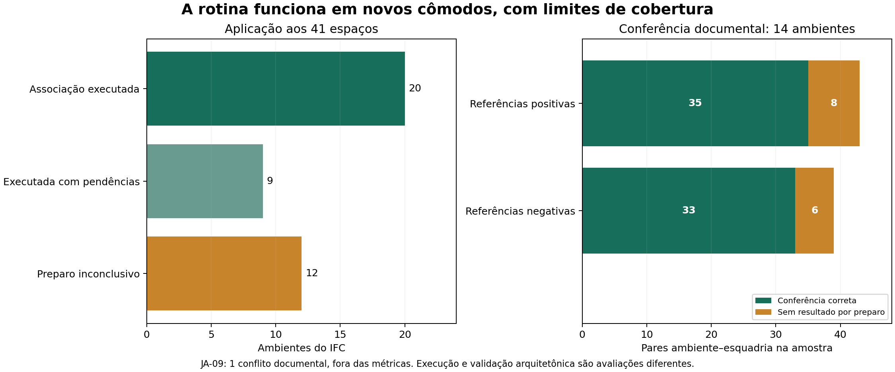
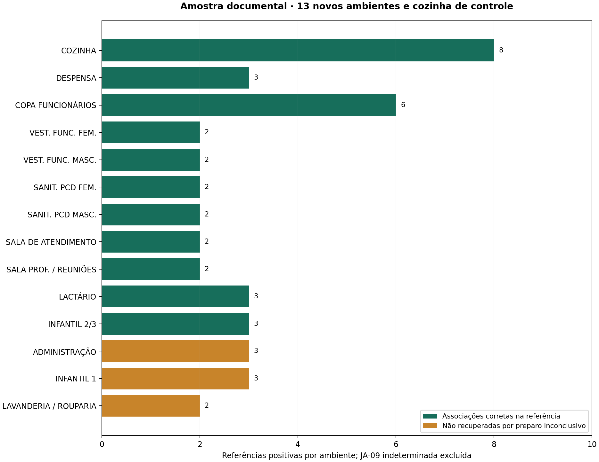

Foram solicitados todos os 41 IfcSpace: a cozinha de controle e os outros 40. O mesmo núcleo IFC2SB parcial + Kiavarz foi aplicado com parâmetros comuns, sem ajustar tolerâncias por nome do ambiente. O recorte de cada parede foi preparado uma vez e compartilhado; a referência documental foi consultada depois da previsão.
29 espaços chegaram à associação; 12 ficaram inconclusivos no preparo. Foram registradas 74 associações geométricas ambiente–esquadria, envolvendo 57 esquadrias distintas. Uma porta compartilhada pode participar de dois pares; o total de pares não é um quantitativo de peças.

A amostra intencional contém 14 ambientes: cozinha, despensa, copa, dois vestiários, dois sanitários PCD, sala de atendimento, sala de professores, lactário, Infantil 2/3, Administração, Infantil 1 e Lavanderia/Rouparia. Os três últimos permanecem na avaliação mesmo sem associação calculável.
Entre os casos determinados em ambientes processados: 35 associações corretas, 33 exclusões corretas, 0 associações indevidas e 0 omissões após associação. Há ainda 8 referências positivas não recuperadas por preparo inconclusivo e 6 negativas não avaliáveis. A JA-09 da cozinha continua indeterminada por divergência entre a planta geral e as ampliações.

| Ambiente | Corretas | Indevidas | Omissões após associação | Exclusões corretas | Não recuperadas por preparo | Conflito documental |
|---|---|---|---|---|---|---|
| COZINHA | 8 | 0 | 0 | 6 | 0 | 1 |
| DESPENSA | 3 | 0 | 0 | 2 | 0 | 0 |
| COPA FUNCIONÁRIOS | 6 | 0 | 0 | 3 | 0 | 0 |
| VEST. FUNC. FEM. | 2 | 0 | 0 | 3 | 0 | 0 |
| VEST. FUNC. MASC. | 2 | 0 | 0 | 3 | 0 | 0 |
| SANIT. PCD FEM. | 2 | 0 | 0 | 3 | 0 | 0 |
| SANIT. PCD MASC. | 2 | 0 | 0 | 3 | 0 | 0 |
| SALA DE ATENDIMENTO | 2 | 0 | 0 | 2 | 0 | 0 |
| SALA PROF. / REUNIÕES | 2 | 0 | 0 | 2 | 0 | 0 |
| LACTÁRIO | 3 | 0 | 0 | 3 | 0 | 0 |
| INFANTIL 2/3 | 3 | 0 | 0 | 3 | 0 | 0 |
| ADMINISTRAÇÃO | 0 | 0 | 0 | 0 | 3 | 0 |
| INFANTIL 1 | 0 | 0 | 0 | 0 | 3 | 0 |
| LAVANDERIA / ROUPARIA | 0 | 0 | 0 | 0 | 2 | 0 |
A conferência é documental, assistida por IA, não cega nem revista por especialista independente. Identificações usam tipo, posição e vizinhança nas pranchas R03 02, 20, 24–27. Portas/janelas em limites, acessórios, preenchimentos IfcWall e elementos internos têm papéis distintos. Não foi produzida referência exaustiva de todas as superfícies 3D ou categorias.
Referência e justificativas · Casos em CSV · Origem oficial FNDE.
O helper de preparo exige uma única casca fechada, válida e sem descarte de faces. Recusa nesse critério não demonstra inexistência de geometria ou erro do IFC. A rotina registra motivo e contagem indisponível, preservando o modelo original.
| Ambiente | GlobalId | Motivo do preparo |
|---|---|---|
| INFANTIL 1 | 2x_Zaq6pr5AQd4475C6QUa | Ambiente não forma uma única casca fechada; sem reparação automática |
| INFANTIL 4 | 0sO2ntUVLBIgGbIJU8hmMH | Ambiente não forma uma única casca fechada; sem reparação automática |
| INFANTIL 5 | 260FEG3a58vBCfaJfNceHt | Ambiente não forma uma única casca fechada; sem reparação automática |
| BERÇARIO | 26Rq0vnwv75eit3wXW3p8h | Sólido do ambiente inválido |
| DEPÓSITO | 2w$FA149nEHA8yGLkpF3DV | Ambiente não forma uma única casca fechada; sem reparação automática |
| CIRCULAÇÃO | 0cLuVHWYX1JPabs5d7Dkmr | Sólido do ambiente inválido |
| AMAMENTAÇÃO | 1U5z$rH8X2aQkwaZbGMQJK | Ambiente não forma uma única casca fechada; sem reparação automática |
| HIGIENIZAÇÃO | 3fO06QkO923xMQZekZduj4 | Sólido do ambiente inválido |
| ADMINISTRAÇÃO | 0fkTeNBl9BSg0N67HirM_S | Sólido do ambiente inválido |
| LAVANDERIA / ROUPARIA | 3xRiW6JFvAuQvq$RW3ILAS | Sólido do ambiente inválido |
| HALL DE ENTRADA | 3uWGbQ0lbCbx7e6UDu08ih | Sólido do ambiente inválido |
| FRALDÁRIO | 0Zn4gWiVr4LOhf3Np$7$Ua | Sólido do ambiente inválido |
Vinte chegaram à associação sem pendências registradas nesse recorte; nove chegaram com pendências de faces/recortes; doze ficaram inconclusivos no preparo. Mesmo nos vinte, o estado computacional não significa aprovação arquitetônica. A quantidade de interfaces depende da segmentação do IFC e não é a quantidade de paredes físicas.
| Ambiente | Estado | Fragmentos de interface | Esquadrias associadas | Internos candidatos | Componentes candidatos |
|---|---|---|---|---|---|
| INFANTIL 1 | inconclusivo_preparacao_espaco | — | — | — | — |
| INFANTIL 2/3 | associacao_executada_com_pendencias | 210 | 3 | 0 | 0 |
| INFANTIL 4 | inconclusivo_preparacao_espaco | — | — | — | — |
| INFANTIL 5 | inconclusivo_preparacao_espaco | — | — | — | — |
| SANIT. INFANTIL FEM. | associacao_executada_com_pendencias | 373 | 2 | 2 | 0 |
| SALA MULTIUSO | associacao_executada_com_pendencias | 35 | 2 | 0 | 0 |
| SANIT. INFANTIL MASC. | associacao_executada_com_pendencias | 291 | 2 | 2 | 0 |
| BERÇARIO | inconclusivo_preparacao_espaco | — | — | — | — |
| PCD INFANTIL | associacao_executada | 70 | 2 | 0 | 0 |
| SOLÁRIO - 3 | associacao_executada_com_pendencias | 184 | 3 | 1 | 0 |
| DEPÓSITO | inconclusivo_preparacao_espaco | — | — | — | — |
| CIRCULAÇÃO | associacao_executada_com_pendencias | 137 | 11 | 0 | 0 |
| SOLÁRIO - 2 | associacao_executada_com_pendencias | 184 | 3 | 1 | 0 |
| CASA DE BOMBAS | associacao_executada | 1 | 0 | 0 | 0 |
| PLAYGROUND | associacao_executada_com_pendencias | 6 | 0 | 0 | 0 |
| CIRCULAÇÃO | inconclusivo_preparacao_espaco | — | — | — | — |
| PÁTIO COBERTO / REFEITÓRIO | associacao_executada | 35 | 0 | 0 | 0 |
| SALA DE ATENDIMENTO | associacao_executada | 106 | 2 | 0 | 0 |
| AMAMENTAÇÃO | inconclusivo_preparacao_espaco | — | — | — | — |
| HIGIENIZAÇÃO | inconclusivo_preparacao_espaco | — | — | — | — |
| SALA PROF. / REUNIÕES | associacao_executada | 21 | 2 | 0 | 0 |
| CIRCULAÇÃO | associacao_executada | 54 | 2 | 0 | 0 |
| SANIT. PCD FEM. | associacao_executada | 37 | 2 | 0 | 0 |
| SANIT. PCD MASC. | associacao_executada | 24 | 2 | 0 | 0 |
| ADMINISTRAÇÃO | inconclusivo_preparacao_espaco | — | — | — | — |
| COZINHA | associacao_executada | 14 | 9 | 10 | 3 |
| DESPENSA | associacao_executada | 4 | 3 | 0 | 1 |
| LAVANDERIA / ROUPARIA | inconclusivo_preparacao_espaco | — | — | — | — |
| COPA FUNCIONÁRIOS | associacao_executada | 10 | 6 | 0 | 0 |
| VEST. FUNC. FEM. | associacao_executada | 20 | 2 | 0 | 0 |
| HALL DE ENTRADA | inconclusivo_preparacao_espaco | — | — | — | — |
| VEST. FUNC. MASC. | associacao_executada | 27 | 2 | 0 | 0 |
| VARANDA DE SERVIÇO / DML | associacao_executada | 17 | 1 | 2 | 0 |
| GÁS | associacao_executada | 3 | 3 | 0 | 0 |
| LACTÁRIO | associacao_executada | 5 | 3 | 3 | 1 |
| CASTELO D'ÁGUA | associacao_executada | 0 | 0 | 0 | 0 |
| SOLÁRIO - 1 | associacao_executada_com_pendencias | 42 | 4 | 2 | 0 |
| PLAYGROUND | associacao_executada | 1 | 0 | 0 | 0 |
| LIXO | associacao_executada | 3 | 2 | 0 | 0 |
| FRALDÁRIO | inconclusivo_preparacao_espaco | — | — | — | — |
| CIRCULAÇÃO | associacao_executada | 36 | 1 | 0 | 0 |
O preparo examinou 457 paredes: 453 tiveram recorte preparado e 4 ficaram inconclusivas no módulo parcial. O fallback por caixa do programa original não foi portado; não se fabricaram geometrias substitutas.
Uma verificação OCP dos 406 pares entre os 29 espaços aceitos encontrou 12 pares com volume comum acima de 10⁻⁸ m³. Essas medições são diagnósticos atuais do estudo; não são operações CGAL/Nef. As sobreposições ficam registradas e não vetam automaticamente toda abertura.
Os sinais CGAL/Krijnen da cozinha não foram transplantados aos novos pares. Lilis não foi executado no lote; seu módulo comparativo parcial e as referências permanecem disponíveis. A generalização desta revisão é do núcleo de recortes/interfaces, não dos programas completos dos autores.
A cozinha manteve nove esquadrias, 14 interfaces, dez internos e três componentes, com a área das interfaces preservada no limiar numérico. Cinco controles de regressão e seis controles da generalização verificam cobertura, isolamento do cache, parâmetros comuns e tratamento das inconclusões.
O novo grafo contém 137832 triplas e preserva integralmente a base v08 de 120191 triplas. A consulta reaberta encontrou os 41 estados e os 74 pares ambiente–esquadria. Nos 12 inconclusivos, a quantidade permanece ausente, em vez de zero.
Grafo completo compactado · Consulta atual · Resposta · Sobreposições.
| Ambiente | Objeto | GlobalId | Referência | Conferência | Justificativa |
|---|---|---|---|---|---|
| COZINHA | PA2 | 1ZNEbr8yzAzwIfNr8DLfEB | sim | associacao_correta | Lado leste, saída de lixo da cozinha para a varanda de serviço. |
| COZINHA | PA1 | 22ZRfsRw51vP3lSdz$OaVX | sim | associacao_correta | Lado leste, entrada de alimentos da cozinha. |
| COZINHA | PM2 | 2RDqryaovC_OblAlg91p4L | sim | associacao_correta | Ligação cozinha–despensa, no rebaixo do lado leste. |
| COZINHA | JA-06 | 2Psura1WP8A94fLaBoEm9B | sim | associacao_correta | Janela entre cozinha e despensa, acima do trecho com PM2. |
| COZINHA | JA-02 | 0wPWb0MMPB4fIt63Wr561W | sim | associacao_correta | Lado oeste, trecho sul de recepção de louças usadas. |
| COZINHA | JA-03 | 2gFlVdRqv1I8I1BeRhOgAU | sim | associacao_correta | Lado oeste, abertura central de preparo final/distribuição. |
| COZINHA | JA-10 | 3d_vFlGOv3KP97Xx9CDsPh | sim | associacao_correta | Lado oeste, janela mais ao norte, junto ao preparo de verduras. |
| COZINHA | JA-10 | 1GA_BKTQ11re2ONp_LaBjt | sim | associacao_correta | Lado oeste, janela entre JA-02 e JA-03, junto ao preparo de carnes. |
| COZINHA | JA-09 | 2rpo8JwSv5ChvJw5HNm$2i | indeterminado | indeterminado_documental | A planta geral 02 mostra JA-09 no lado leste da cozinha, acima da PA2. A planta ampliada 24 e a vista 02 da prancha 25 não representam essa janela. O IFC contém JA-09 nessa posição. Divergência documental preservada. |
| COZINHA | JA-06 | 3aeAlxh_13aAsFE9GaRC63 | nao | exclusao_correta | Janela da copa de funcionários, ao sul da cozinha, na mesma parede longa do lado leste. |
| COZINHA | PA2 | 1TYUzaGPfAJRH9yn9Ryl8A | nao | exclusao_correta | Porta da copa de funcionários para a varanda, ao sul da cozinha; compartilha hospedeiro longo. |
| COZINHA | JA-06 | 3Y94GCHOLCFx2AyfF7cwT5 | nao | exclusao_correta | Janela do lado externo da despensa, oposta à cozinha. |
| COZINHA | PM1 | 36VcylwljAxhzXEsJpeekr | nao | exclusao_correta | Porta da higienização, ao sul do trecho oeste da cozinha. |
| COZINHA | PM3 | 26Bf$PJ918MAZ83NMLZGra | nao | exclusao_correta | Porta do sanitário PCD masculino para a circulação, ao norte da cozinha. |
| COZINHA | PM3 | 3dtlrqmAH13OjRv8PfxORZ | nao | exclusao_correta | Porta do sanitário PCD feminino para a circulação, ao norte da cozinha. |
| DESPENSA | PM2 | 2RDqryaovC_OblAlg91p4L | sim | associacao_correta | PM2 para a cozinha; duas JA-06 em lados opostos, uma para a cozinha e outra externa. |
| DESPENSA | JA-06 | 3Y94GCHOLCFx2AyfF7cwT5 | sim | associacao_correta | PM2 para a cozinha; duas JA-06 em lados opostos, uma para a cozinha e outra externa. |
| DESPENSA | JA-06 | 2Psura1WP8A94fLaBoEm9B | sim | associacao_correta | PM2 para a cozinha; duas JA-06 em lados opostos, uma para a cozinha e outra externa. |
| DESPENSA | JA-09 | 2rpo8JwSv5ChvJw5HNm$2i | nao | exclusao_correta | PM2 para a cozinha; duas JA-06 em lados opostos, uma para a cozinha e outra externa. |
| DESPENSA | PA1 | 22ZRfsRw51vP3lSdz$OaVX | nao | exclusao_correta | PM2 para a cozinha; duas JA-06 em lados opostos, uma para a cozinha e outra externa. |
| COPA FUNCIONÁRIOS | PA2 | 1TYUzaGPfAJRH9yn9Ryl8A | sim | associacao_correta | PA2 para varanda; PM1 para higienização; PM2 para lavanderia; PM1 de cada vestiário; JA-06 a leste. A ampliação 27 mostra apenas parte da copa, por isso a lista completa usa a planta geral 02. |
| COPA FUNCIONÁRIOS | PM1 | 36VcylwljAxhzXEsJpeekr | sim | associacao_correta | PA2 para varanda; PM1 para higienização; PM2 para lavanderia; PM1 de cada vestiário; JA-06 a leste. A ampliação 27 mostra apenas parte da copa, por isso a lista completa usa a planta geral 02. |
| COPA FUNCIONÁRIOS | PM2 | 0_ryLaOGzAOBqfUvc1U7n3 | sim | associacao_correta | PA2 para varanda; PM1 para higienização; PM2 para lavanderia; PM1 de cada vestiário; JA-06 a leste. A ampliação 27 mostra apenas parte da copa, por isso a lista completa usa a planta geral 02. |
| COPA FUNCIONÁRIOS | PM1 | 169fDE8fzAfwNtW5i5B13P | sim | associacao_correta | PA2 para varanda; PM1 para higienização; PM2 para lavanderia; PM1 de cada vestiário; JA-06 a leste. A ampliação 27 mostra apenas parte da copa, por isso a lista completa usa a planta geral 02. |
| COPA FUNCIONÁRIOS | PM1 | 2cFrzebFj5yucM5VsP3OGN | sim | associacao_correta | PA2 para varanda; PM1 para higienização; PM2 para lavanderia; PM1 de cada vestiário; JA-06 a leste. A ampliação 27 mostra apenas parte da copa, por isso a lista completa usa a planta geral 02. |
| COPA FUNCIONÁRIOS | JA-06 | 3aeAlxh_13aAsFE9GaRC63 | sim | associacao_correta | PA2 para varanda; PM1 para higienização; PM2 para lavanderia; PM1 de cada vestiário; JA-06 a leste. A ampliação 27 mostra apenas parte da copa, por isso a lista completa usa a planta geral 02. |
| COPA FUNCIONÁRIOS | PA1 | 22ZRfsRw51vP3lSdz$OaVX | nao | exclusao_correta | PA2 para varanda; PM1 para higienização; PM2 para lavanderia; PM1 de cada vestiário; JA-06 a leste. A ampliação 27 mostra apenas parte da copa, por isso a lista completa usa a planta geral 02. |
| COPA FUNCIONÁRIOS | PA2 | 1ZNEbr8yzAzwIfNr8DLfEB | nao | exclusao_correta | PA2 para varanda; PM1 para higienização; PM2 para lavanderia; PM1 de cada vestiário; JA-06 a leste. A ampliação 27 mostra apenas parte da copa, por isso a lista completa usa a planta geral 02. |
| COPA FUNCIONÁRIOS | PM1 | 2e4fcXX8r2eQ30U9kXib6A | nao | exclusao_correta | PA2 para varanda; PM1 para higienização; PM2 para lavanderia; PM1 de cada vestiário; JA-06 a leste. A ampliação 27 mostra apenas parte da copa, por isso a lista completa usa a planta geral 02. |
| VEST. FUNC. FEM. | PM1 | 169fDE8fzAfwNtW5i5B13P | sim | associacao_correta | PM1 para a copa e JA-10 na fachada sul; sem atribuir a janela ou a porta da lavanderia vizinha. |
| VEST. FUNC. FEM. | JA-10 | 1F$D_mIrX1a99uipYbBwTc | sim | associacao_correta | PM1 para a copa e JA-10 na fachada sul; sem atribuir a janela ou a porta da lavanderia vizinha. |
| VEST. FUNC. FEM. | PM2 | 0_ryLaOGzAOBqfUvc1U7n3 | nao | exclusao_correta | PM1 para a copa e JA-10 na fachada sul; sem atribuir a janela ou a porta da lavanderia vizinha. |
| VEST. FUNC. FEM. | JA-10 | 0MtzaWbKT3E8W89Cb1ofVP | nao | exclusao_correta | PM1 para a copa e JA-10 na fachada sul; sem atribuir a janela ou a porta da lavanderia vizinha. |
| VEST. FUNC. FEM. | PM1 | 2cFrzebFj5yucM5VsP3OGN | nao | exclusao_correta | PM1 para a copa e JA-10 na fachada sul; sem atribuir a janela ou a porta da lavanderia vizinha. |
| VEST. FUNC. MASC. | PM1 | 2cFrzebFj5yucM5VsP3OGN | sim | associacao_correta | PM1 para a copa e JA-10 na fachada sul; objetos do vestiário feminino permanecem separados. |
| VEST. FUNC. MASC. | JA-10 | 0nUNW5q9bDzf0djZdLVx85 | sim | associacao_correta | PM1 para a copa e JA-10 na fachada sul; objetos do vestiário feminino permanecem separados. |
| VEST. FUNC. MASC. | PM1 | 169fDE8fzAfwNtW5i5B13P | nao | exclusao_correta | PM1 para a copa e JA-10 na fachada sul; objetos do vestiário feminino permanecem separados. |
| VEST. FUNC. MASC. | JA-10 | 1F$D_mIrX1a99uipYbBwTc | nao | exclusao_correta | PM1 para a copa e JA-10 na fachada sul; objetos do vestiário feminino permanecem separados. |
| VEST. FUNC. MASC. | PA2 | 1TYUzaGPfAJRH9yn9Ryl8A | nao | exclusao_correta | PM1 para a copa e JA-10 na fachada sul; objetos do vestiário feminino permanecem separados. |
| SANIT. PCD FEM. | PM3 | 3dtlrqmAH13OjRv8PfxORZ | sim | associacao_correta | PM3 para a circulação e JA-09 na fachada norte. Não usar o nome repetido JA-09 para misturar as duas unidades. |
| SANIT. PCD FEM. | JA-09 | 0VeRAi_mb68x8ugQcd2dwI | sim | associacao_correta | PM3 para a circulação e JA-09 na fachada norte. Não usar o nome repetido JA-09 para misturar as duas unidades. |
| SANIT. PCD FEM. | PM3 | 26Bf$PJ918MAZ83NMLZGra | nao | exclusao_correta | PM3 para a circulação e JA-09 na fachada norte. Não usar o nome repetido JA-09 para misturar as duas unidades. |
| SANIT. PCD FEM. | JA-09 | 2d3Lf9EOrE1hSO$vdTxC7w | nao | exclusao_correta | PM3 para a circulação e JA-09 na fachada norte. Não usar o nome repetido JA-09 para misturar as duas unidades. |
| SANIT. PCD FEM. | JA-06 | 3Y94GCHOLCFx2AyfF7cwT5 | nao | exclusao_correta | PM3 para a circulação e JA-09 na fachada norte. Não usar o nome repetido JA-09 para misturar as duas unidades. |
| SANIT. PCD MASC. | PM3 | 26Bf$PJ918MAZ83NMLZGra | sim | associacao_correta | PM3 para a circulação e JA-09 na fachada norte, correspondência por lado e posição. |
| SANIT. PCD MASC. | JA-09 | 2d3Lf9EOrE1hSO$vdTxC7w | sim | associacao_correta | PM3 para a circulação e JA-09 na fachada norte, correspondência por lado e posição. |
| SANIT. PCD MASC. | PM3 | 3dtlrqmAH13OjRv8PfxORZ | nao | exclusao_correta | PM3 para a circulação e JA-09 na fachada norte, correspondência por lado e posição. |
| SANIT. PCD MASC. | JA-09 | 0VeRAi_mb68x8ugQcd2dwI | nao | exclusao_correta | PM3 para a circulação e JA-09 na fachada norte, correspondência por lado e posição. |
| SANIT. PCD MASC. | JA-06 | 2Psura1WP8A94fLaBoEm9B | nao | exclusao_correta | PM3 para a circulação e JA-09 na fachada norte, correspondência por lado e posição. |
| SALA DE ATENDIMENTO | PM1 | 3whdmTCPbAavExR20OE5sf | sim | associacao_correta | PM1 na divisa sul com circulação e JA-07 ao norte. A PM4 próxima pertence à circulação/berçário. |
| SALA DE ATENDIMENTO | JA-07 | 1MXMJys_jDyAKI3G1kOZBK | sim | associacao_correta | PM1 na divisa sul com circulação e JA-07 ao norte. A PM4 próxima pertence à circulação/berçário. |
| SALA DE ATENDIMENTO | PM4 | 0fAH1U8h9C5PQ2QWeT8Iz1 | nao | exclusao_correta | PM1 na divisa sul com circulação e JA-07 ao norte. A PM4 próxima pertence à circulação/berçário. |
| SALA DE ATENDIMENTO | PM1 | 0TxphoUa5CBfpLD5xJ1OGL | nao | exclusao_correta | PM1 na divisa sul com circulação e JA-07 ao norte. A PM4 próxima pertence à circulação/berçário. |
| SALA PROF. / REUNIÕES | PM1 | 0TxphoUa5CBfpLD5xJ1OGL | sim | associacao_correta | PM1 a oeste e JA-08 a leste; a JA-08 da administração está em outro trecho da mesma fachada. |
| SALA PROF. / REUNIÕES | JA-08 | 1NvI3$U_PDIf6PXm8NCiw0 | sim | associacao_correta | PM1 a oeste e JA-08 a leste; a JA-08 da administração está em outro trecho da mesma fachada. |
| SALA PROF. / REUNIÕES | PM1 | 3eSlFj_ObCUQzpQQ7szs0n | nao | exclusao_correta | PM1 a oeste e JA-08 a leste; a JA-08 da administração está em outro trecho da mesma fachada. |
| SALA PROF. / REUNIÕES | JA-08 | 2Bxl9jspjDYQEVB6T0OWrT | nao | exclusao_correta | PM1 a oeste e JA-08 a leste; a JA-08 da administração está em outro trecho da mesma fachada. |
| LACTÁRIO | PM1 | 2e4fcXX8r2eQ30U9kXib6A | sim | associacao_correta | PM1 de ligação com higienização no canto nordeste; JA-01 na divisa norte; JA-07 na fachada sul. |
| LACTÁRIO | JA-01 | 0NmyrWXaf3LQDxEPAA0o3c | sim | associacao_correta | PM1 de ligação com higienização no canto nordeste; JA-01 na divisa norte; JA-07 na fachada sul. |
| LACTÁRIO | JA-07 | 1Gwimt9FTAYwkvoW3Yffpx | sim | associacao_correta | PM1 de ligação com higienização no canto nordeste; JA-01 na divisa norte; JA-07 na fachada sul. |
| LACTÁRIO | PM1 | 36VcylwljAxhzXEsJpeekr | nao | exclusao_correta | PM1 de ligação com higienização no canto nordeste; JA-01 na divisa norte; JA-07 na fachada sul. |
| LACTÁRIO | PM2 | 0_ryLaOGzAOBqfUvc1U7n3 | nao | exclusao_correta | PM1 de ligação com higienização no canto nordeste; JA-01 na divisa norte; JA-07 na fachada sul. |
| LACTÁRIO | JA-06 | 3aeAlxh_13aAsFE9GaRC63 | nao | exclusao_correta | PM1 de ligação com higienização no canto nordeste; JA-01 na divisa norte; JA-07 na fachada sul. |
| INFANTIL 2/3 | PM4 | 0AXbNPPML1WPFzZGGjGw$P | sim | associacao_correta | PM4 no acesso nordeste; PA4 para solário a oeste; JA-11 na fachada leste. A JA-12 norte pertence à Infantil 1. |
| INFANTIL 2/3 | PA4 | 3$HZQnC5vA4PThRw0TPdvO | sim | associacao_correta | PM4 no acesso nordeste; PA4 para solário a oeste; JA-11 na fachada leste. A JA-12 norte pertence à Infantil 1. |
| INFANTIL 2/3 | JA-11 | 19iXSPWFP0n8WvhYKoRAnc | sim | associacao_correta | PM4 no acesso nordeste; PA4 para solário a oeste; JA-11 na fachada leste. A JA-12 norte pertence à Infantil 1. |
| INFANTIL 2/3 | PM4 | 1ylx3Jc85Fp9MgHwshluRZ | nao | exclusao_correta | PM4 no acesso nordeste; PA4 para solário a oeste; JA-11 na fachada leste. A JA-12 norte pertence à Infantil 1. |
| INFANTIL 2/3 | JA-12 | 0nb3UlTUj29gTn_gOx9wiH | nao | exclusao_correta | PM4 no acesso nordeste; PA4 para solário a oeste; JA-11 na fachada leste. A JA-12 norte pertence à Infantil 1. |
| INFANTIL 2/3 | PM1 | 3efK_3wsb0Ow_NJDUKYKLb | nao | exclusao_correta | PM4 no acesso nordeste; PA4 para solário a oeste; JA-11 na fachada leste. A JA-12 norte pertence à Infantil 1. |
| ADMINISTRAÇÃO | PM1 | 3eSlFj_ObCUQzpQQ7szs0n | sim | nao_recuperado_por_preparacao | PM1 a oeste, JA-08 a leste e JA-04 ao sul. Caso incluído mesmo com preparo geométrico inconclusivo. |
| ADMINISTRAÇÃO | JA-08 | 2Bxl9jspjDYQEVB6T0OWrT | sim | nao_recuperado_por_preparacao | PM1 a oeste, JA-08 a leste e JA-04 ao sul. Caso incluído mesmo com preparo geométrico inconclusivo. |
| ADMINISTRAÇÃO | JA-04 | 3lu5KpkPXClBfg$0bz1fae | sim | nao_recuperado_por_preparacao | PM1 a oeste, JA-08 a leste e JA-04 ao sul. Caso incluído mesmo com preparo geométrico inconclusivo. |
| ADMINISTRAÇÃO | PM1 | 0TxphoUa5CBfpLD5xJ1OGL | nao | nao_avaliavel_por_preparacao | PM1 a oeste, JA-08 a leste e JA-04 ao sul. Caso incluído mesmo com preparo geométrico inconclusivo. |
| ADMINISTRAÇÃO | JA-08 | 1NvI3$U_PDIf6PXm8NCiw0 | nao | nao_avaliavel_por_preparacao | PM1 a oeste, JA-08 a leste e JA-04 ao sul. Caso incluído mesmo com preparo geométrico inconclusivo. |
| INFANTIL 1 | PM4 | 1ylx3Jc85Fp9MgHwshluRZ | sim | nao_recuperado_por_preparacao | PM4 para circulação, PA4 para solário e JA-12 ao norte. Caso incluído mesmo com preparo inconclusivo. |
| INFANTIL 1 | PA4 | 3Muyty6Jn84wD2ggZdX4nF | sim | nao_recuperado_por_preparacao | PM4 para circulação, PA4 para solário e JA-12 ao norte. Caso incluído mesmo com preparo inconclusivo. |
| INFANTIL 1 | JA-12 | 0nb3UlTUj29gTn_gOx9wiH | sim | nao_recuperado_por_preparacao | PM4 para circulação, PA4 para solário e JA-12 ao norte. Caso incluído mesmo com preparo inconclusivo. |
| INFANTIL 1 | PM1 | 3efK_3wsb0Ow_NJDUKYKLb | nao | nao_avaliavel_por_preparacao | PM4 para circulação, PA4 para solário e JA-12 ao norte. Caso incluído mesmo com preparo inconclusivo. |
| INFANTIL 1 | JA-07 | 2qm97bbYDBtecllt_L7Ma_ | nao | nao_avaliavel_por_preparacao | PM4 para circulação, PA4 para solário e JA-12 ao norte. Caso incluído mesmo com preparo inconclusivo. |
| LAVANDERIA / ROUPARIA | PM2 | 0_ryLaOGzAOBqfUvc1U7n3 | sim | nao_recuperado_por_preparacao | PM2 para a copa e JA-10 ao sul; a PM1 e JA-10 do vestiário feminino não pertencem à lavanderia. |
| LAVANDERIA / ROUPARIA | JA-10 | 0MtzaWbKT3E8W89Cb1ofVP | sim | nao_recuperado_por_preparacao | PM2 para a copa e JA-10 ao sul; a PM1 e JA-10 do vestiário feminino não pertencem à lavanderia. |
| LAVANDERIA / ROUPARIA | PM1 | 169fDE8fzAfwNtW5i5B13P | nao | nao_avaliavel_por_preparacao | PM2 para a copa e JA-10 ao sul; a PM1 e JA-10 do vestiário feminino não pertencem à lavanderia. |
| LAVANDERIA / ROUPARIA | JA-10 | 1F$D_mIrX1a99uipYbBwTc | nao | nao_avaliavel_por_preparacao | PM2 para a copa e JA-10 ao sul; a PM1 e JA-10 do vestiário feminino não pertencem à lavanderia. |
IFC2SB parcial: Fichter et al. (2021). Faces e interseções adaptadas: Kiavarz et al. (2023). Geometria RDF: Zhang et al. (2018). Conversão semântica anterior preservada: Bonduel et al. (2018). Diagnósticos anteriores e alternativas mantidas: Krijnen et al. (2020) e Lilis et al. (2026). O preparo compartilhado, a execução em lote, os diagnósticos OCP e a avaliação documental são adaptações deste estudo.
Conclusão: há evidência de funcionamento além da cozinha em dez novos ambientes da amostra processada. Ainda não há cobertura geométrica completa do edifício: 12 espaços exigem investigação do preparo, e a conferência documental não foi estendida a todos os pares de todos os ambientes.